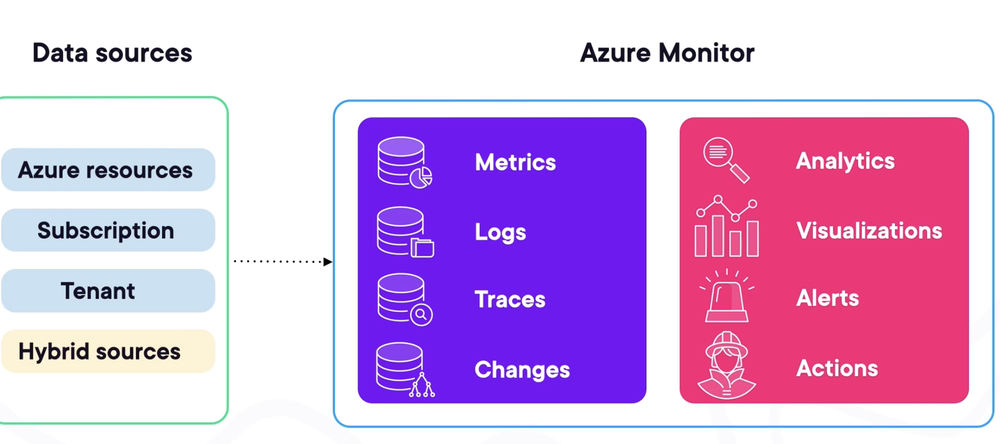

2mon
1 Azure Monitoring Fundamentals
1-1 Collecting Data with Azure Monitor
Here's a concise summary of the Azure Monitor data collection article:
- Diverse Data Sources: Azure Monitor collects data from numerous sources including:
- Azure resources (VMs, SQL DB, networks, etc.)
- Applications (custom apps, OS info from VMs)
- Azure Subscription (health/availability)
- Azure Tenant (e.g., Microsoft Entra ID)
- Hybrid environments (e.g., on-prem SQL with Azure agents)

- Primary Data Types:
- Metrics: Numerical time-series data for real-time/short-term performance monitoring (e.g., CPU%, disk I/O, memory pressure).
- Logs: Detailed event/activity records (e.g., security logs, application logs, Windows/Linux system logs, resource state changes).
- Traces: Data for tracking request flows in distributed applications (e.g., via Application Insights).
- Changes: Tracks modifications to Azure resources over time.
Focus: The article (and course) emphasizes Metrics (real-time performance) and Logs (detailed troubleshooting) as the most common and impactful data types.
- Enabling Collection:
- Automatic: Basic data collection starts immediately when an Azure resource is created.
- Enhanced Setup: Requires configuration for deeper insights:
- Enable diagnostic logging on resources (e.g., Azure SQL DB).
- Install Azure Monitor agents on VMs.
- Use the Data Collector API to send data from custom applications (web apps, functions, mobile apps).
1-2 Taking Action on Azure Monitor Data
1. Data Analysis Tools
- Metrics Explorer: Visualizes real-time numerical data (CPU%, memory, disk I/O) via charts to track performance trends and set threshold-based alerts.
- Log Analytics: Performs deep investigation using Kusto Query Language (KQL) or a point-and-click interface. Combines logs (Windows events, Linux syslogs, errors) for troubleshooting complex issues.
- Key Difference:
- Metrics: Real-time resource health (automatic collection).
- Logs: Detailed event analysis (may require setup like Log Analytics workspace).
Analytics
Metrics Explorer： Create charts, analyze trends, and identify fluctuations in metric values
Log Analytics： Detailed log investigation and custom queries for in-depth troubleshooting
Analytics Use Cases
Metrics Explorer
- Real-time performance monitoring
- Metrics like CPU, memory, disk
- Threshold-based alerts
- Quick visual overview
- Immediately collected
Log Analytics
- Deep analysis
- Multiple log types and sources
- Tracking event or error patterns
- Powerful KQL queries
- Requires steps to enable
2. Visualization Options
-
Dashboards: Static, high-level view of multiple resources in one place
- Static views in Azure portal showing metrics, logs, or insights. Ideal for quick team sharing.
-
Workbooks: A flexible tool for dynamically interacting with data
- Interactive reports combining multiple datasets for real-time analysis and deep troubleshooting.
-
Power BI: Business analytics service for advanced reporting
- Advanced business reporting (e.g., executive dashboards), integrates external data, and automates updates.
-
Grafana: Open-source dashboard platform
- Open-source dashboards for multi-cloud monitoring (AWS/GCP) and third-party tools (Dynatrace, New Relic).
Analytics Use Cases
- Dashboards: View real-time resource health in the Azure portal
- Workbooks： Investigate performance trends and troubleshoot issues
- Power BI： Executive reports or sharing business insights outside Azure
- Grafana Unified monitoring across cloud platforms and external tool
3. Automated Actions & Alerts
- Alerts: Trigger notifications (email/SMS/webhooks) based on metric thresholds or log patterns.
- Autoscaling: Dynamically adjusts resources (e.g., VMs) to optimize performance/cost.
- AIOps: Automates anomaly detection and issue resolution.
- Insights: Microsoft’s pre-built monitoring experiences for key services (e.g., VMs, containers, networks).
Key Takeaways
- Act on Data: Tools transform raw data into actionable insights (e.g., autoscaling from CPU metrics).
- Visualization Fit:
- Dashboards → Quick health checks
- Workbooks → Interactive analysis
- Power BI/Grafana → Cross-platform or executive reporting
- Automation: Alerts and AIOps enable proactive responses to issues.
- Start with Insights: Microsoft-curated templates accelerate monitoring setup.
💡 Core Value: Azure Monitor closes the loop from data collection → analysis → visualization → automated action.
1-4 Demo: Configuring Alerts and Notifications
🔔 Alert Creation Methods
- Portal Setup (GUI):
- Created Action Group (
pstestgroup) with email notifications. - Defined an alert rule (
Cpu80Percent) for a VM (pstest1):- Condition:
Max CPU > 80%over 1 minute. - Severity: Warning.
- Condition:
-
Enabled email notifications via the action group.
-
CLI Method (Azure Cloud Shell):
- Used
az monitor metrics alert createto create an alert for another VM (pstest2):- Condition:
CPU > 40%. - Severity: Informational (level 3).
- Condition:
az monitor metrics alert create -n "Cpu40Percent" --resource-group "1-b4e6871e-playground-sandbox" --scopes $VMID --condition
"max percentage CPU > 40" --description "Virtual machine is running at or greater than 40% CPU utilization" --evaluation-frequency 1m —-window-size 1m -- severity 3
⚡ Alert Verification
- Ran a load-generation script to trigger alerts.
- Results:
- Both alerts fired:
CPU > 40%(pstest2) andCPU > 80%(pstest1). - Email received for the 80% alert (configured via action group).
- Incident details showed:
- CPU progression graphs.
- Options to update incident status (New/Acknowledged/Closed).
Demo: Analyzing with Azure Monitor Logs 💡 Key Takeaways
- Action Groups: Centralize notifications (email/SMS) for reuse across alerts.
- Flexible Configuration: Use GUI (portal) for one-off setups or CLI (
az) for automation/scaling. - Real-Time Response: Alerts provide:
- Immediate visibility into thresholds (e.g., CPU spikes).
- Contextual data for troubleshooting.
- Notifications to streamline team response.
1-5 Demo: Analyzing with Azure Monitor Logs
Here's a concise summary of the Azure Monitor Logs analysis demo:
🔍 Three Approaches to Log Analysis
- Pre-Built Queries (Zero-Code):
- Accessed via Queries Hub (scoped to resources like VMs).
- Example: "Heartbeat" query to verify VM connectivity (
pstest1,pstest2). -
Instantly shows key details: computer name, IP, last check-in time.
-
Simple Mode (Point-and-Click GUI):
- Visually build queries using filters:
- Start with table (e.g.,
Eventfor Windows logs). - Add filters:
Source → EventLog→ Specific computer (e.g.,pstest1).
- Start with table (e.g.,
-
No KQL knowledge needed – ideal for quick ad-hoc analysis.
-
KQL Mode (Advanced Custom Queries):
-
Write Kusto Query Language scripts for deep investigation.
- Example query:
kql Event | where EventLog == "Security" | where EventID == 4625 - Use Case: Track failed logins (
EventID 4625) across all VMs, revealing details like attacker account names (e.g.,fakeuser2).
💡 Key Workflow Insights
- Scope First: Start by selecting a resource group/VM to target analysis.
- Progress from Simple → Advanced:
- Pre-built queries → GUI filtering → Custom KQL.
- KQL Advantages:
- SQL-like syntax (familiar for many users).
- Enables complex cross-VM correlation (e.g., security threat hunting).
- Unified Interface: All approaches accessible in the same Log Analytics workspace.
🚀 Getting Started Tips
- New Users: Leverage pre-built queries + Simple mode to avoid syntax barriers.
- Security/Admin Teams: Use KQL to audit events (e.g., failed logins, resource access).
- Troubleshooting: Combine log types (application/security/system) for root-cause analysis.
Demo Outcome: From verifying VM health to investigating security events, Azure Monitor Logs adapts to user expertise—delivering value immediately. 🕵️♂️